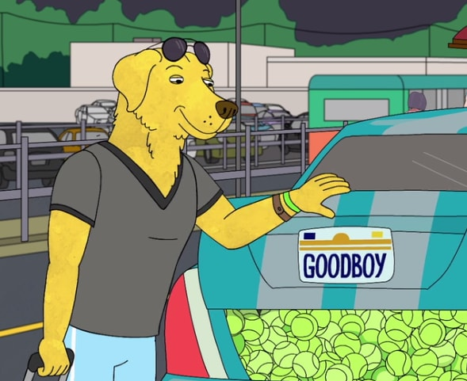

Back to Homepage
Mr. Peanutbutter
Character Intro
Mr. Peanutbutter is an energetic and cheerful yellow Labrador Retriever who is BoJack's former sitcom rival and Diane's boyfriend (and later husband).
Mr. Peanutbutter was the star of Mr. Peanutbutter's House, which, according to BoJack, "borrowed the premise" from Horsin' Around.
He had a stint at filming a celebrity reality show called Peanutbutter and Jelly. Despite their rivalry, Mr. Peanutbutter cares a great deal about
BoJack's opinion and admires him for his work on Horsin' Around. He has an especially good relationship with Todd, and his positive attitude and
financial resources combined with Todd's outlandish schemes and plans often result in the two starting questionable business ventures, such as
a Halloween store that is exclusively open in January. He grew up in the Labrador Peninsula, which is depicted as being populated entirely
by Labrador Retrievers. "Mr." is his actual first name. He often shouts to an offscreen, but implicatively outlandish, presence only known as "Erica".
He is a graduate of Northwestern University.

Table: Mr. Peanutbutter
Background
| Age |
Species |
Sex |
Residence |
Occupation |
| Late 40's |
Dog |
Male |
Los Angeles |
- Actor
- Entrepreneur
- TV show host
|
Gallery
Mr. Peanutbutter
Princess Carolyn
Diane Nguyen